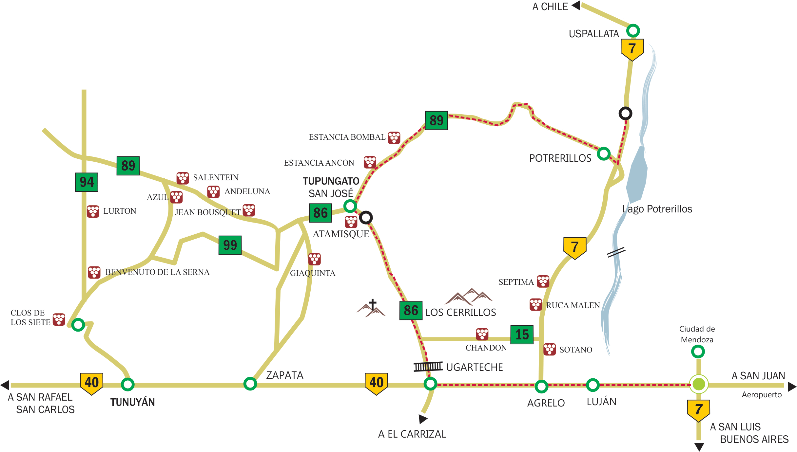
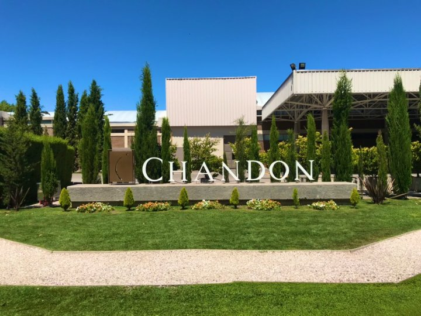
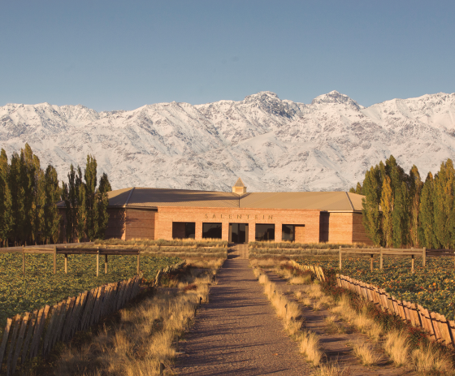
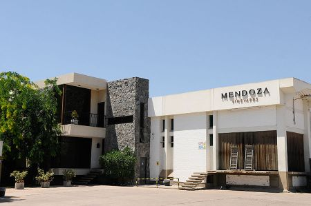
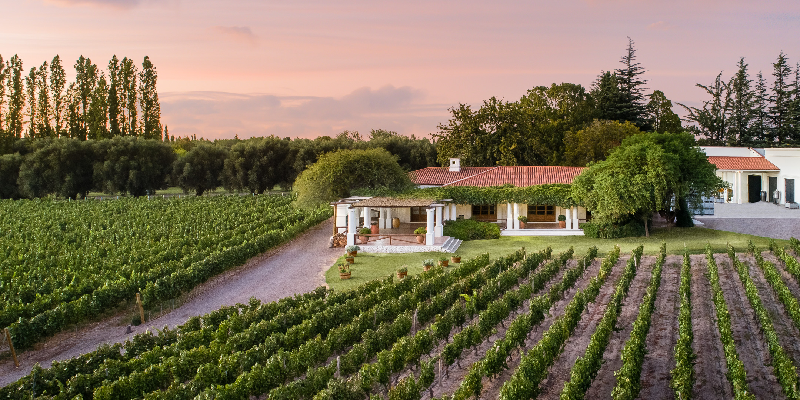
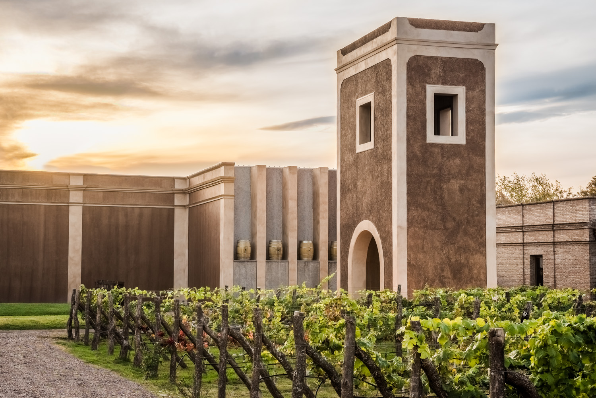

BODEGAS
Visitar una bodega es conocer la esencia
de sus vinos.
Rutas de Bodegas Zona Cuyo
Bodegas Chandon
En Argentina, la compañía está conformada por dos unidades de negocio: Chandon Argentina, situada en Mendoza al pie de la cordillera de los Andes, dedicada a la elaboración y abastecimiento de nuestros productos a distintos mercados alrededor del mundo.
Bodegas Salentein
El objetivo de Bodegas Salentein es claro: elaborar vinos de la más alta calidad, comprometidos con la tierra en la que nacen. Durante su elaboración, Salentein respeta la naturaleza y, al mismo tiempo, se involucra con la comunidad de la zona;
VINEYARD S.A
Mendoza Vineyards S.A. se encuentra situada desde el año 2003 en un punto estratégico de Mendoza, una de las mejores zonas vitivinícolas de la Argentina. Forma parte del grupo internacional Origin Wine UK Ltd., oficina de venta directa que trabaja con los principales mayoristas del Mundo, quien maneja la importación y distribución de sus vinos en las grandes cadenas de supermercados y mayoristas. La bodega no posee viñedos propios, lo que le da la posibilidad de elegir viñedos de las mejores zonas de Mendoza, los cuales tienen 100 años de antigüedad y han sido cuidados por generaciones de productores. Más info aquí
NIETO SENETINER
En 1969, las familias Nieto y Senetiner adquirieron la finca y comenzaron a escribir un nuevo capítulo de crecimiento y desarrollo. Ampliaron las instalaciones y consolidaron una presencia que ya se había vuelto ineludible en la historia de los grandes vinos argentinos. En 1998, Nieto Senetiner pasó a formar parte del Grupo de Bodegas de la familia Pérez Companc. Comprometido con los más altos estándares de elaboración y calidad del vino, y sustentados en un plan continuo de inversiones, tanto en fincas como en tecnología de procesos, Nieto Senetiner consolida desde entonces su liderazgo, sin renunciar a los nobles atributos que forjaron su origen y marcaron su tiempo. Más info aquí
LOS TONELES
Bodega Los Toneles Bodega Los Toneles dispone de la última
tecnología para satisfacer a mercados exigentes. Cuenta con piletas de cemento
recubiertas de epoxi, tanques de acero inoxidable, vasijas de hormigón y bordalesas,
huevos para fermentación y barricas de roble para la crianza de vinos de alta gama.
El vino transmite en su espíritu la manifestación de la tierra y el trabajo de los seres humanos.
Por lo tanto, desde el principio se decidió que la bodega solo tomaría uvas de viñedos de pequeña
escala. Estos se encuentran en diversas regiones, donde se siembran menos variedades por hectárea y
la cantidad se reemplaza por la calidad en términos de la expectativa de rendimiento.
Más info aquí